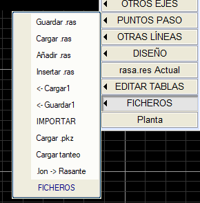

Kırmızı Kotlar sabit menüsünden, Dosyalar açılır menüsü ile kırmızı kot dosyalarını kaydetme, yükleme, ekleme, içe aktarma vb. işlemler yapabiliriz. Her birini ele alalım:
.ras Kaydet: Ekranda tanımlı olan boykesit tanımını bir kırmızı kot dosyasına .ras kaydetmeyi sağlar.
.ras Yükle: Bir .ras kırmızı kot dosyasını ekrana yüklemeyi sağlar ve varsa ekranda tanımlı olan kırmızı kotu değiştirir.
.ras Ekle: Ekranda sahip olduğumuz kırmızı kotun son elemanına seçtiğimiz .ras dosyasını ekler. Tanımlı kırmızı kotun sonuna ekler.
.ras Araya Ekle: Seçtiğimiz .ras dosyasını tanımlı olan kırmızı kota ekler. Kullanıcı tarafından tanımlanan bir geçiş uzunluğuyla (varsayılan 40m, 20 konkav ve 20 konveks) bir konkav-konveks bağlantı gerçekleştirir.
Yükle1: Belirli bir .ras dosyasını, .ras dosyasının zamanında sağ veya sol platform olarak kaydedilip kaydedilmediğine bağlı olarak sağ veya sol platformun, sağ veya sol hendeğin, orta refüjün veya yardımcının, sağ veya sol kafa hendeğinin, sağ veya sol duvar taban kotunun, sağ veya sol duvar kret kotunun boykesiti olarak yüklemeyi sağlar.
Kaydet1:
Bir .ras kırmızı kot dosyasını, sağ veya sol platform, sağ veya sol hendek, orta refüj, yardımcı, sağ veya sol kafa hendeği olup olmadığına bağlı olarak kaydetmeyi sağlar,sağ veya sol duvar taban kotu, sağ veya sol duvar kret kotu
Ayrıca, bir başlangıç KM'si ve bir bitiş KM'si ile tanımlanan bir kesimi kaydetmeyi sağlar.
İçe Aktar:
Boykesit seçeneği açılmış olarak dönüştürücüler ağacı gösterilir. Açılır menüyü gördüğümüzde, çevirmemiz gereken dosya için uygun dönüştürücüyü seçmeliyiz.
.pkz Yükle: Bir boykesiti, birinci sütununda KM'lerin ve ikinci sütununda kotların tanımını içeren .pkz uzantılı bir dosyadan yüklemeyi sağlar.
Denemeyi Yükle: Yatay Güzergahta gerçekleştirilen Kırmızı Kot Denemesi ile ilgilidir.
.lon -> Kırmızı Kot: .lon dosyasının KM ve kot verilerini, mevcut Kırmızı Kotu tanımlamak için kullanır.
|